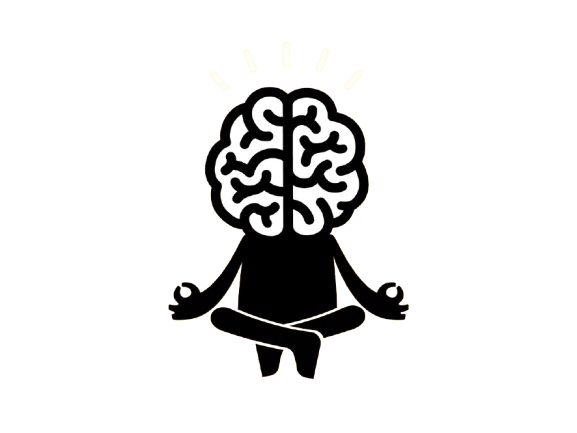

Melhore a sua qualidade de vida
Mindfulness é uma palavra inglesa que podemos traduzir como atenção plena.
Na prática, o mindfulness compreende diversos exercícios de meditação que têm como objetivo levar o indivíduo à atenção plena.
Com a experiência de atenção plena desenvolvida com esses exercícios, torna-se cada vez mais fácil aplicar a técnica no dia a dia para além dos momentos de meditação, ajudando em episódios de estresse e ansiedade.
Confira abaixo a versão traduzida e editada de como aplicar a técnica Na Prática.